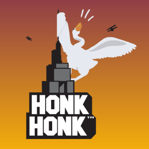

Projets réalisés par Théo Manelphe
Première équipe de l'IUT lors de la Code Game Jam 2020
Lieu: Montpellier
Date: Janvier 2020
La Code Game Jam est un concours de programmation de jeu vidéo réservé aux étudiants de l'Université de Montpellier (19 équipes de 4-6).
L'objectif était, en 30 heures dont 25 en continu, de créer un jeu vidéo avec un thème imposé.
Notre équipe à terminé première des équipes de l'IUT! Nous avons reçu le second prix du jury (le premier prix à été décerné à des étudiants de Master, hors IUT donc),
la seconde place du prix du public, ainsi que la première place du prix du Logo!
Dans notre équipe mon rôle était le sound design : les bruitages et toutes les musiques (au nombre de 7), et la modélisaion des niveaux avec Unity. Chacune des deux taches m'a pris 8-10 heures de travail.

Le logo de notre équipe : Honk Honk!

Participation à la Code Game Jam 2019
Lieu: Montpellier
Date: Janvier 2019
La Code Game Jam 2019 est un concours de programmation de jeu vidéo réservé aux étudiants de l'Université de Montpellier (16 équipes de 5-10).
L'objectif était, en 30 heures dont 25 en continu, de créer un jeu vidéo avec un thème imposé.
Notre équipe à réalisé un jeu complet dans le temps imparti, et ce dernier a été applaudi par un jury de professionnels du jeu vidéo.
Je me suis chargé de la composition des 4 musiques du jeu un Sound designer professionnel a d'ailleurs souligné leur qualité, puis je me suis chargé du mapping
et de la creation des menus / pré menus / crédits.
3 années scolaires en tant que journaliste dans une radio étudiant
Lieu: Orange
Date: Septembre 2015 - Juin 2018
Membre actif d'une radio étudiante pendant 3 années scolaires.
Chronique hebdomadaire + informations du midi 1-2 fois /semaine
Couverture radio du salon Orme 2016 : L’Intitulé du salon étant « Innover pour éduquer, éduquer dans un monde qui innove »
Couverture du festival "Lives au pont 2016" Avec interviews de chanteurs célèbres et conférences de presse